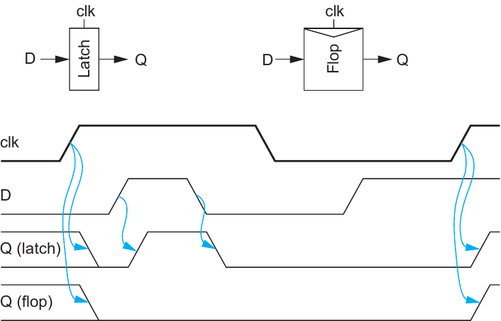

2.1 Sequencing Elements#
Sequencing elements are employed to separate the different pipeline stages and control the data flow between them. They are memory elements that store the current tokens of a stage and output it to the connected combinational logic. In the case of synchronous pipelines, the sampling and propagation of tokens is triggered by a global clock signal. This section will explore the sequencing elements that act as the basis for classical synchronous circuits, examining their behavior and physical properties.
2.1.1 Flip-Flops and Latches#
The two most widely used sequencing elements are called the flip-flop and latch. Although there are several types of flip-flops and latches, the introduction of the D-latch and D-flip-flop will be sufficient to cover the topics at hand. They are the basic building blocks used to implement the various pipeline concepts that will be presented in the following sections.
They both have a data (D) and clock (clk)[1] signal as input and a data output (Q). The flip-flop samples the current input data (D) at the active clock edge and holds this sampled value at the output (Q) until the arrival of the next active edge. For the sake of simplicity, we assume the active clock edge to be the rising edge.
A latch on the other hand is transparent[2] when the clock is high and opaque[3] when the clock is low. Meaning that when the clock is high, the data (D) gets directly transferred to the output and when the clock is low, the last input data is stored and held at the output Q, even if input D changes. Note that latches can also be active-low, meaning they are enabled by a low voltage level instead. For a visual understanding, the relation of input to output for these sequencing elements is represented in Figure 2.1.
{kind=link}

Figure 2.1: Flip-Flop and Latch Timing Diagram [3]
2.1.2 Metastability#
This ideal behaviour of the flip-flop and latch applies most of the time. However, there are some edge cases, where the elements might reach a so called metastable state, in which they cannot clearly decide on what value to store. In such cases tokens can get corrupted which might lead to severe system failures.
In the 1970’s researchers noticed excessive failure rates in interactions between systems that operated in different clock domains. Especially the multiprocessor systems, that were on the rise back then, often had to deal with these vulnerabilities. The paper in [5] suggested a root cause for this problem. They discovered that setting the data (D) and clock (clk) input almost simultaneously can lead to delayed or invalid outputs. As it turns out flip-flops have a hard time deciding which value to store, when the data makes a transition close to the sampling edge.
They only work as intended when the data is applied at least a specific time window before and held constant for a certain time after the sampling clock edge. These time windows are defined by the so-called setup and hold time. For a data input to be sampled correctly, it has to be applied some time \(t_{setup}\) before the clock transition, and held for some time \(t_{hold}\) after the clock transition has taken place. If that is not the case, the sequencing element can remain in the mentioned metastable state for an undefined amount of time, before eventually settling on an output value. Note that this behaviour also applies to latches, when they switch from transparent to opaque.
An analogy from everyday life to understand this problem more intuitively would be offside in football. The further away an attacking player is from the offside line, the easier it will be for the referee to make a decision between off- or onside. If an attacking player is really close to the offside line, the referee will have a much harder time. He will remain in an undecided (metastable) state, before making the final, potentially false, decision.
The issue of metastability is inherent in the hardware and unavoidable. It needs to be taken into consideration and properly dealt with. For the pipeline architectures presented in the later chapters, it will be a key aspect to ensure that the setup and hold time windows of the registers are met, in order for the designs to work correctly.
2.1.3 Timing Notation#
This section will introduce some timing properties and notation for sequential and combinational circuit elements. These will be important to describe timing behaviour and constraints of the various pipeline implementations in this thesis.
Term |
Name |
|---|---|
\(t_{pd}\) |
Logic Propagation Delay |
\(t_{cd}\) |
Logic Contamination Delay |
\(t_{pcq}\) |
Latch/Flop Clock-to-Q Propagation Delay |
\(t_{ccq}\) |
Latch/Flop Clock-to-Q Contamination Delay |
\(t_{pdq}\) |
Latch D-to-Q Propagation Delay |
\(t_{cdq}\) |
Latch D-to-Q Contamination Delay |
\(t_{setup}\) |
Latch/Flop Setup Time |
\(t_{hold}\) |
Latch/Flop Hold Time |
Table 2.1: Delays and Timing Parameters
Table 2.1 lists the different types of delays that we will have to take into account. Generally there is a distinction to be made between contamination and propagation delay. The contamination delay \(t_{cd}\) describes the time it takes for a change in the input of a logic gate to start affecting the output (e.g. changes and glitches). The propagation delay \(t_{pd}\) describes the amount of time it takes for the output of a logic gate to actually stabilize and conform to its specified function.
For flip-flops and latches we also define the clock-to-Q contamination (\(t_{ccq}\)) and propagation (\(t_{pcq}\)) delay. These define how long after the sampling clock transition the data starts affecting and settling at the output Q. For the latch we have to define additional delays for the case the latch is transparent. We denote them as D-to-Q contamination (\(t_{cdq}\)) and propagation (\(t_{pdq}\)) delay. The setup and hold time introduced in the previous sub-chapter \ref{meta} are again denoted as \(t_{setup}\) and \(t_{hold}\).